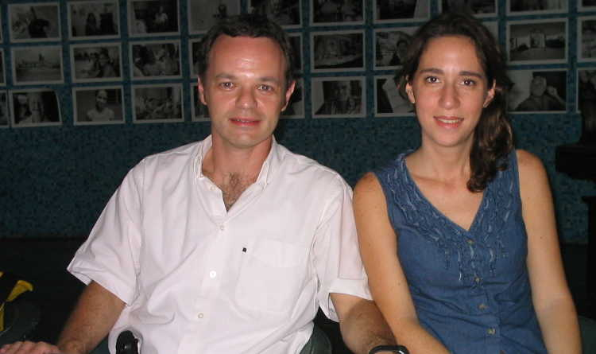

|
The Joint Distribution Committee's Programs in Cuba Nestor Szewach and Mara Steiner are building a system of Jewish religious education in Cuba which will last far beyond their two years of service to Cuba's Jewish communities. Assigned to Cuba by the Buenos Aires office of the New York-based Joint Distribution Committee, Nestor and Mara are methodically helping to build a series of educational programs which, after they depart in August of 2004, will be operated by the Cubans. These programs include: Bar and Bat Mitzvah training, an eight-month program to train young people coming of age in all of Cuba's thirteen Jewish communities. Starting with three young men and three young women, they are focused now on the central part of the country. Young people attend a study session every two weeks, and also have home assignments. In the past there was no program, and Bar Mitzvah training took place on as as-needed basis. In early 2004 there were Bar and Bat Mitzvah candidates in Havana, Cienfuegos, Sancti Spiritus, and Santiago de Cuba. A Course in Judaism and Jewish Studies has begun for the communities, with follow-up materials provided. The course covers important elements of the Jewish faith and culture, with study of such topics as history, holidays, the life cycle and related events and celebrations, and Jewish folk tales. This course is being developed with three different teams, and is now in Santiago de Cuba and Havana. Eventually each community will have this program. An extensive Sunday School program for the Patronato, Havana's Jewish Community Center, which will eventually be available throughout Cuba. At the present time this program serves young people from four years old to sixteen, with fourteen teachers, allowing two teachers per class for a total of 65 children. There is also an adult program with 30 adults participating. Nestor and Mara worked with the community to develop the pedological content for these programs. A Teacher Training System, a program which will eventually be able to provide trained teachers in most of Cuba's Jewish communities. A Summer Camp, for youth, adults, and seniors. These camps are held away from the cities and in a natural environment, including mountain towns with facilities for visiting groups. These camps give individuals from across the country a chance to get to know members from other Jewish communities. Activities include both recreation and study, and last for three days. They helped restart Menorah, a newsletter used as a means of Jewish education and communication throughout Cuba.
Nestor and Mara are energetic in describing the support given by the Joint Distribution Committee (JDC). "We appreciate and welcome the support given to us," they say. "Without this support we could not do the work we have been sent here to do." They are the fifth couple sent to Cuba by the JDC, and have formalized much of the work which has taken place before. Nestor's training as a computer analyst is obvious in the systematic development of programs, with a solid support base being established for their continuation. When asked about the possibility of a Cuban rabbi in the future, Mara replies, "That would be complicated. Someone would have to come out of the community here, make the decision to be a rabbi, then would have to go away to Buenos Aires or New York or elsewhere for training. It would be a long process. At this time we don't think this will happen anytime soon." When Nestor and Mara leave Cuba in August, they will leave behind a much better organized Jewish community, and a system of religious education which will help strengthen the continuing revitalization of Cuba's Jewish congregations. Article by
Richard Smith
|